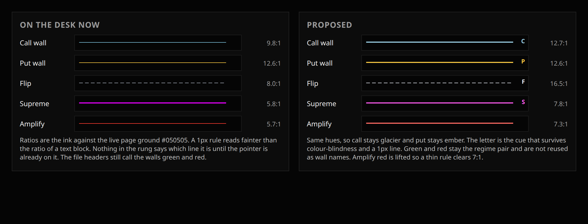
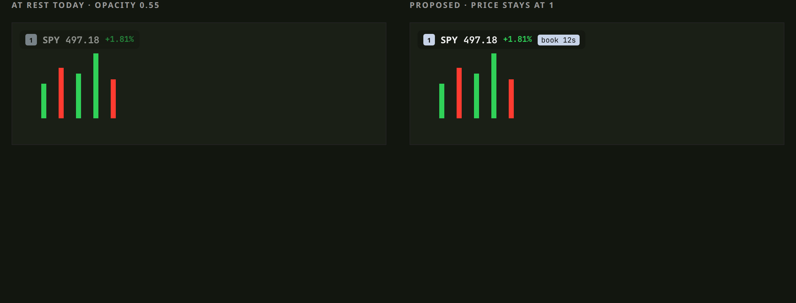
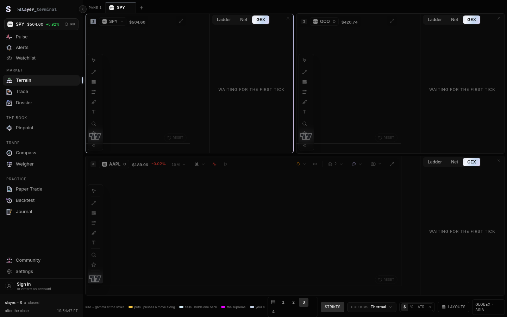
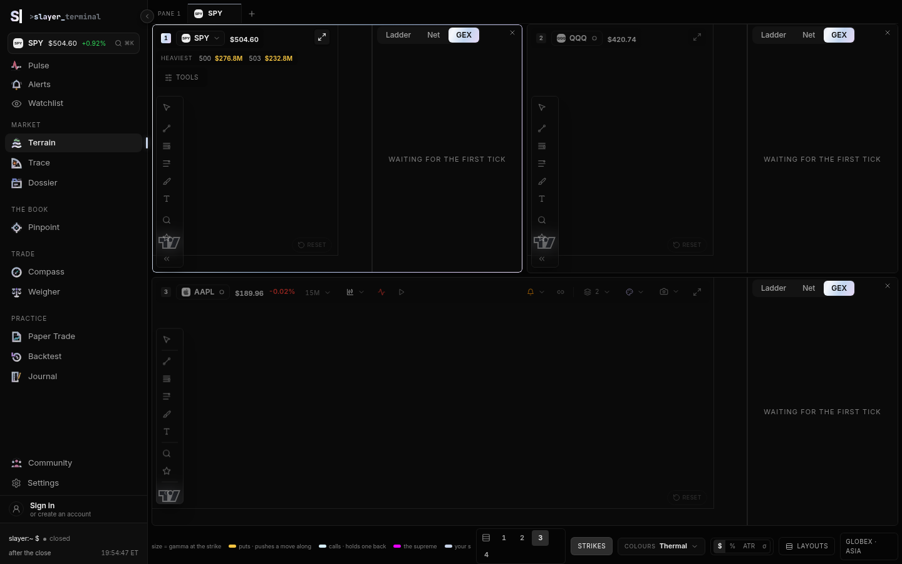
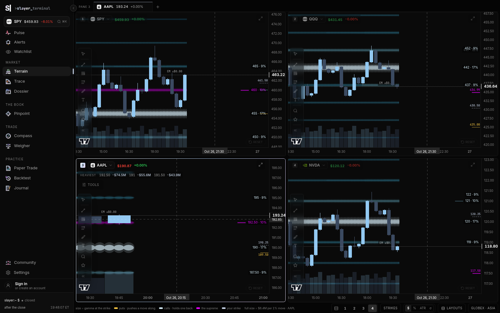
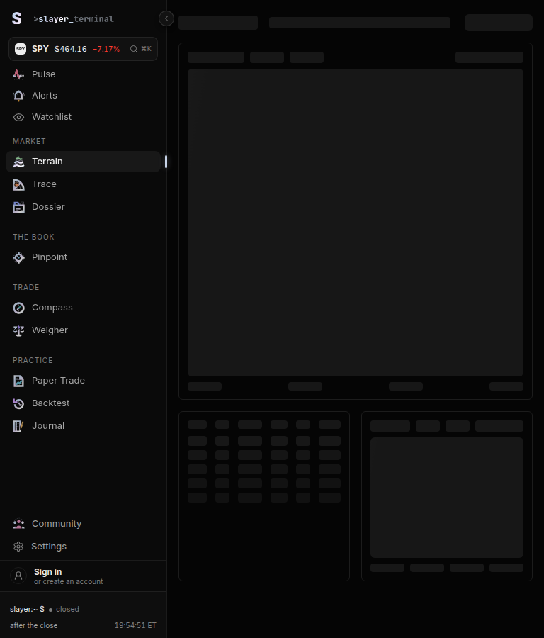
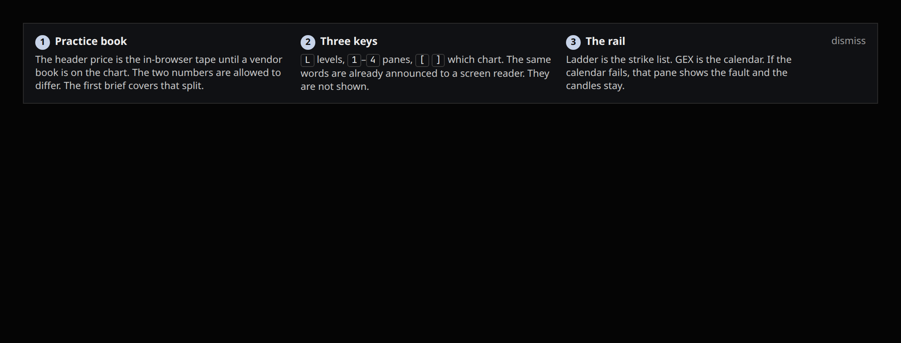
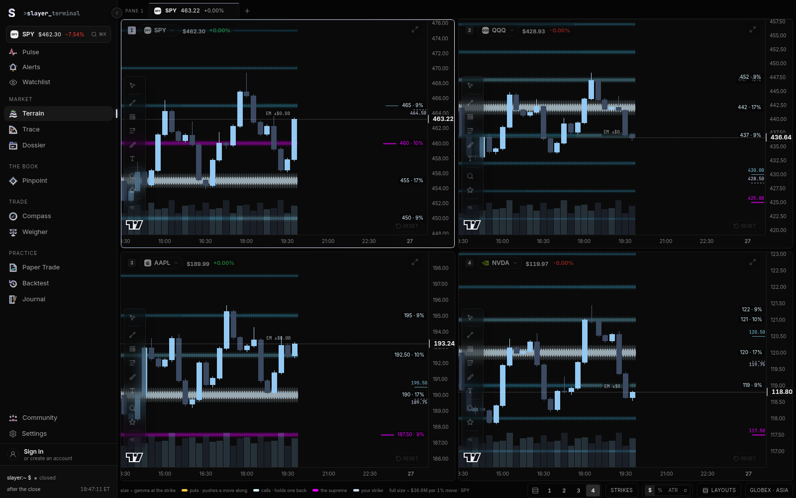
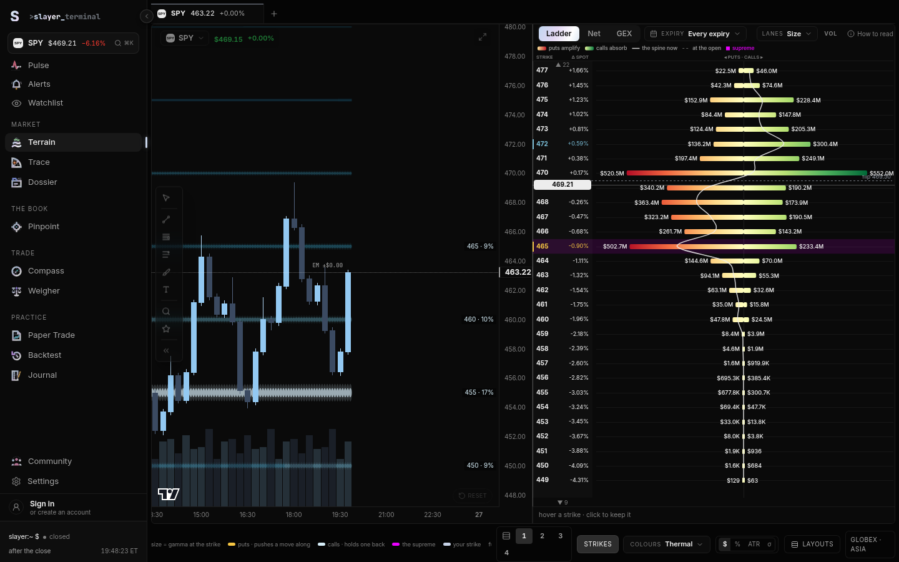
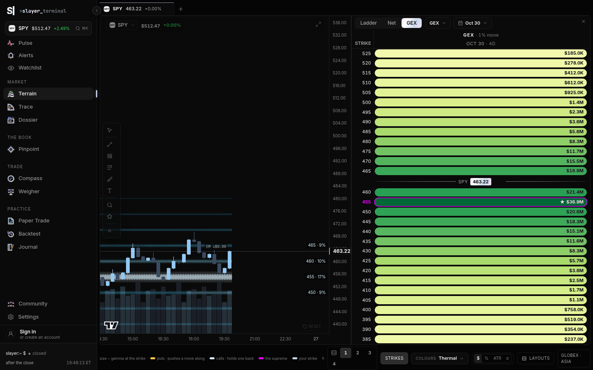

Slayer terminal · Terrain · companion
Measured frame times, a contrast pass on the live desk, and the work that is not already on the first brief’s list. The first PDF stays as it is. If a topic is only a pointer here, the argument lives there.
The first brief already covers the two books in one header, the ExposureField hooks crash, the flip that does not match the Map, the empty state that says a tick is coming, and the roadmap: regime sentence, rung scope, max pain, the expected-move line and scorecard, and a line that follows the call wall. Those comparison tables are not redrawn. Where this file touches the same code, it adds a measurement or a different fix and says so in one line.
The first brief described the chart code and quoted older notes inside it (a 182ms screener jolt, 52–82ms tasks while dragging). Nothing in that PDF was timed on this desk. This pass was.
Setup. Playwright drove Chrome. /api/uw answered with one session of minute bars (390 bars in the first pass, 1,000 minutes of tape in the second) and a 29-strike chain. spot-exposures returned 404 on purpose so an empty live-gamma map could not wipe the chain. Each pane had trails, levels, the cone and volume on, and the studies off. The strike rail was off for the chart numbers, because mounting the GEX calendar is the crash in the first brief. Frame time is the gap between animation frames. A drop is a gap over 32.5ms (a missed 60Hz frame) or over 50ms. The production simulator still ticks every 1.5s. The burst tests call that same processTick faster, on purpose, and are labelled as a compressed feed.
One session folded to 15 minutes is a short series, on the order of 26 candles. Pan and zoom on that series are already at the display’s ceiling.
| Desk | Gesture | Frames | p50 | p95 | Max | >32ms | >50ms |
|---|---|---|---|---|---|---|---|
| 1 pane | Idle 2.2s | 130 | 16.7 | 16.8 | 33.3 | 2 | 0 |
| 1 pane | Pan | 38 | 16.7 | 16.8 | 16.8 | 0 | 0 |
| 1 pane | Zoom | 43 | 16.7 | 16.7 | 16.8 | 0 | 0 |
| 2 panes | Pan | 39 | 16.7 | 16.7 | 16.8 | 0 | 0 |
| 2 panes | Zoom | 54 | 16.7 | 16.8 | 16.8 | 0 | 0 |
| 4 panes | Idle 2.2s | 133 | 16.7 | 16.7 | 16.8 | 0 | 0 |
| 4 panes | Pan | 31 | 16.7 | 16.7 | 16.8 | 0 | 0 |
| 4 panes | Zoom | 51 | 16.7 | 16.7 | 16.8 | 0 | 0 |
Times are milliseconds. Idle on one pane missed two frames (max 33.3ms) and then held. A CPU profile of the four-pane pan put the chart renderer at about 3ms of self time across the gesture. The hold that skips a data rebuild while the pointer is down is already in StrikeChart.tsx around line 1017. There is nothing to “fix” in the pan path of a 15-minute session. OffscreenCanvas would move a cost this trace did not find.
The second pass stored timeframe: "1m" and served 1,000 minute bars (pre-market through the evening; the chart’s cash series is still one session, about 390 bars). The on-screen interval label was not in the document text — the toolbar is hidden until hover — so this is the config that was loaded, not a label that was read back. On the single large pane, pan was no longer free: p50 still 16.7ms, p95 33.4ms, max 50.1ms, 19 of 56 frames over 32ms, one over 50ms. Zoom on that pane: p95 16.7ms, one frame at 33.4ms. Four small 1-minute panes panned and zoomed at 16.7ms with no drops. The cost shows up when one canvas is holding the whole session and the pointer is dragging it, not when the desk is split.
MarketDataContext.tsx lines 119–146 run Simulator.tick and publish inside startTransition, on a 1,500ms interval. The harness kept that function and called it at 10, 50 and 200 times a second for about two seconds. The synchronous call is cheap (p50 0.2–0.4ms, max 9.2ms on the worst window). React commits later. The browser would not actually run the 200/s request: setTimeout clamped it, and the main thread clamped it further. “Achieved” is calls divided by elapsed time.
| Desk | Asked | Achieved | Call p50 | Frame p95 | Max frame | >32ms | >50ms | DOM edits |
|---|---|---|---|---|---|---|---|---|
| 1 | 10 | 10.5 | 0.3 | 16.8 | 16.8 | 0 | 0 | 230 |
| 1 | 50 | 48.6 | 0.2 | 16.7 | 16.8 | 0 | 0 | 650 |
| 1 | 200 | 71.7 | 0.2 | 16.8 | 33.4 | 16 | 0 | 835 |
| 2 | 10 | 10.2 | 0.3 | 33.3 | 50.0 | 16 | 0 | 298 |
| 2 | 50 | 25.2 | 0.3 | 50.0 | 83.4 | 99 | 15 | 367 |
| 2 | 200 | 61.4 | 0.2 | 16.8 | 16.8 | 0 | 0 | 812 |
| 4 | 10 | 10.5 | 0.4 | 16.7 | 33.3 | 2 | 0 | 381 |
| 4 | 50 | 29.5 | 0.2 | 16.8 | 33.4 | 9 | 0 | 729 |
| 4 | 200 | 51.3 | 0.2 | 33.3 | 33.4 | 32 | 0 | 893 |
At the real 1.5s cadence the desk is the idle row: 60Hz. The burst is the stress test. One window was bad and the neighbours were not: two panes at a requested 50/s only achieved 25/s, with 15 frames over 50ms and a gap of 83ms. The same desk at a requested 200/s then ran clean. That 83ms gap did not repeat, so it is not a scaling law. It is one bad window, reported because it happened.
A PerformanceObserver for longtask was installed and stayed empty on every window, including that one. The API was present (ltErr was null). A Chrome trace of a four-pane burst at about 50/s recorded 16,265 timeline events, 12 RunTask entries longer than 16ms, and a worst task of 21ms. Nothing in the trace was a 50ms task. The 83ms frame gap was slack between tasks, not one long task.
The CPU sampler (250µs) is the profiler capture. Self time is the whole window, not one frame. (program) is idle and native bookkeeping, so it is listed once and then ignored. Sampler line numbers are the transformed module; the source lines cited later were opened in the repo.
| Window | Function | Where the sampler put it | Self time |
|---|---|---|---|
| 4-pane pan | (program) | native | 1,903ms |
| 4-pane pan | drawImage | canvas | 21ms |
| 4-pane pan | AnimatedNumber | AnimatedNumber.tsx | 3.5ms |
| 4-pane pan | chart renderer | lightweight-charts | 3.1ms |
| 4-pane 50/s ticks | (program) | native | 1,865ms |
| 4-pane 50/s ticks | drawImage | canvas | 368ms |
| 4-pane 50/s ticks | vwapSeries | data/indicators.ts | 49ms |
| 4-pane 50/s ticks | ellipse | canvas, the bead field | 42ms |
| 4-pane 50/s ticks | bead walk | gexNodesPrimitive.ts | 29ms |
| Ladder, 10/s | draw | ProfilePanel.tsx | 27ms |
| Ladder, 10/s | vwapSeries | data/indicators.ts | 11ms |
Pan is not a paint problem. A tick burst is. drawImage at 368ms plus ellipse at 42ms is the bead field and the chart repainting on every commit. That is the number behind the OffscreenCanvas note in the next section. vwapSeries is the number behind the confluence fix, and it is app code, so it is the one to change first.
Cold means a new browser context. Warm means a reload of that same page. “Canvases” is the time until four canvases were each wider than 160px. Dev is the Vite server. Preview is vite build served as the production bundle, still with the synthetic book intercepted in the browser.
| DOM content loaded | Four canvases | Notes | |
|---|---|---|---|
| Dev, cold | 438ms | 3,107ms | Document itself was 15KB. The rest of the wait is the module graph plus the book. |
| Dev, warm | — | 2,230ms | The module cache helped. |
| Production, cold | 151ms | 2,129ms | 144 JS files, 2.27MB transferred, 7.19MB decoded. |
| Production, warm | — | 2,698ms | The one reload was slower than the cold open. A warm cache is not assumed. |
Two seconds to candles, after the HTML has already arrived, is the open a trader feels. The chart code is not the first second of that. The shell is.
emitCrosshair in Terrain.tsx around line 2731 walks the other panes and calls apply in the same turn. The visible delay is the paint. On a four-pane desk, time from pointermove to the next animation frame was p50 2.0ms, p95 2.4ms, max 16.3ms, over 25 moves. That is inside one frame at the 95th percentile. The sibling pane was not given its own timestamp — doing that cleanly means editing the chart — so the number is the pane under the cursor. The other panes are marked before that paint, because the call is synchronous.
The first brief’s crash is a race: the GEX view returns early, then calls more hooks once the book exists. This run’s one-up desk, rail on, did not fault in 6.4 seconds. That does not retire the bug. It is the “sometimes survives” case from the first brief, measured this time as a non-event. Switching to Ladder before the bad render, then pushing ticks at 10/s, kept the frame p95 at 16.7ms with no drops. The CPU profile of that window put draw in ProfilePanel.tsx (the frame loop at line 643) at 27ms of self time across about 1.5s. The loop asks for another frame on every frame, including when the ease has already settled. Four rails would be about four times that tax. It fits inside 16ms today. It is still work the desk does while the trader is only looking.
Four panes, rail off, the real processTick forced at 4 times a second for 36 seconds. That is about 54 seconds of simulator time squeezed into 36 seconds, not an eight-hour session. Chrome’s performance metrics:
| Second | JS heap | Listeners | DOM nodes |
|---|---|---|---|
| 0 | 720 MB | 1,618 | 4,564 |
| 9 | 719 MB | 1,618 | 5,225 |
| 12 | 291 MB | 477 | 1,377 |
| 36 | 354 MB | 477 | 3,114 |
Listeners did not climb on either side of the cliff at 12 seconds. Nodes did: about 73 per second at 4 ticks a second, before the cliff and again after it. The cliff itself dropped roughly 3,800 nodes and 1,100 listeners in one sample. That is a subtree going away, not a garbage collection of detached objects (listeners went with the nodes). The cause of the cliff was not identified. The slope was. If that slope stayed linear at the real 1.5s tick, it would be about 12 nodes a second, on the order of 280,000 nodes over a 6.5-hour session. That extrapolation is a lead, not a proof: the run was 36 seconds and it contained one unexplained teardown.
The tape appended on every tick is a suspect and not a conviction. absorbTape keeps up to 5,000 prints for four hours (MarketDataContext.tsx lines 20–21 and 104–116). Terrain.tsx reads flowTape and hands it to each pane (around lines 1006 and 1571). A 36-second run never reached the cap, so a list that renders prints would still have been growing. Listeners staying flat means this is elements, not addEventListener.
npx vite build finished in 31 seconds. 234 JS files, 9.5MB raw. The routes are already React.lazy in App.tsx, including Terrain. That split is real and it is not enough, because opening Terrain still pulled 144 JS files.
| Chunk | Raw | Gzip | What it means |
|---|---|---|---|
index-*.js | 1,445 KB | 443 KB | The shell. Loaded before any route. Vite warned on it. |
News-*.js | 2,091 KB | 617 KB | Not on the Terrain path. Still the largest file in the build. |
houseGrid-*.js | 1,156 KB | 322 KB | Same warning. Not required to draw a candle. |
Terrain-*.js | 96 KB | 32 KB | The route chunk. Small, because the chart and the field are shared or split further. |
ExposureField-*.js | 101 KB | 33 KB | The rail’s calendar is its own file. Good. |
lightweight-charts | 187 KB | 60 KB | The chart library, already split. |
html2canvas | 201 KB | 48 KB | Loaded on the camera press, not on open. Already done right. |
| CSS entry | 182 KB | — | Ships with the shell. |
The production open transferred 2.27MB of JS and decoded 7.19MB of it. A search of the entry chunk found no UNUSUAL_WHALES_API_KEY, no Theta key, and no api.unusualwhales.com. vite.config.ts sets define['process.env'] to an empty object so a library can read it, and copies the whale key into the server process only. The key is not in the bundle that was built here. There was no .env in the tree, so this is “the build did not inline a key,” not “a key was present and stayed server-side.”
Profiles are Chrome’s CPU sampler at 250µs, summarized by self time. Line numbers below are the TypeScript source, which is what a person edits. The sampler’s own line numbers are the transformed module and do not match.
During the four-pane 50/s burst the hottest function was vwapSeries (data/indicators.ts line 86), about 68ms of self time in a window under two seconds, with buildConfluence’s caller right behind it. The studies were off. The VWAP line was not on the chart. Terrain.tsx lines 1069–1072 recompute the five-timeframe trend on every revision:
const confluence = useMemo( () => buildConfluence(Simulator.getCandles(ticker) ?? []), [ticker, revision] );
The comment above that memo already measured the cost: 1.45ms a call on 8,580 one-minute bars, and about 58ms per minute of wall clock if four panes recompute at ten scans a minute. That arithmetic is for the production tick. It becomes the frame when the tick is faster, which is what the burst showed: four panes at 29 achieved commits a second could not keep the requested 50. buildConfluence (data/confluence.ts line 73) aggregates the whole base and runs a full VWAP per timeframe, then reads the last point.
Fix. Keep the last bar’s time and close. If neither changed, return the previous rows. If only the forming bar’s close changed, patch the last VWAP and the last EMA instead of walking 8,580 bars. The glyph on the timeframe pill only needs the last comparison.
export function buildConfluence(base: readonly Candle[], prev?: Cache): { rows: ConfluenceRow[]; cache: Cache } {
const last = base[base.length - 1];
if (prev && prev.n === base.length && prev.t === last?.time && prev.c === last?.close) {
return { rows: prev.rows, cache: prev };
}
// existing fold, or a last-point patch when only `close` moved
}
Expected gain, tied to this run: the 68ms of vwapSeries samples in that burst go to a handful of milliseconds, and a 50/s request on four panes stops falling behind to 29/s. At the real 1.5s tick the user-visible change is small. The comment’s 58ms per minute is the whole budget this buys back. Do this before a worker. Copying 8,580 candles to a worker costs more than an incremental last point.
startTransition batches work inside one event. Each setTimeout tick is its own event, so a burst is a burst of commits. The candle series already takes the cheap path on a quiet revision: StrikeChart.tsx around line 3131 calls series.update on the last bar, and setData only when the world changed. The waste is computing confluence, trails and the header once per tick instead of once per frame.
let pending = null;
let scheduled = false;
function publish(data) {
pending = data;
if (scheduled) return;
scheduled = true;
requestAnimationFrame(() => {
scheduled = false;
const next = pending;
startTransition(() => setMarketData(next));
});
}
At 1.5s this changes nothing, and that should be said in the commit message so nobody expects a smoother open. On the measured 200/s request (51/s achieved, 32 missed frames, 893 DOM edits) it caps the desk at one commit per frame. That is the whole expected gain.
ProfilePanel.tsx line 643:
const draw = (ts: number) => {
raf = requestAnimationFrame(draw);
// ease toward the pointer, then paint every strike
};
The profile recorded 27ms of self time in draw during a 1.5s, 10/s burst with the ladder up, and the frames still held 16.7ms. Virtualizing 29 strikes will not pay. Gating the loop will. Keep the frame loop only while the ease, the hover, or the data revision is in motion. When the key matches the previous frame, cancel the request. Expected: that 27ms per rail per 1.5s disappears while the trader is still, and four open ladders stop spending a slice of every frame on an ease that has already finished.
These three were on the list to consider. The profiles pick a different order than the list.
OffscreenCanvas, for the bead field, not for pan. During the four-pane tick burst drawImage took 368ms of self time and ellipse took 42ms. During the pan, drawImage was 21ms and the chart renderer was 3ms. Moving the candle canvas off the main thread would not have changed the pan numbers. Moving the bead paint would. gexNodesPrimitive.ts already draws in useBitmapCoordinateSpace and only walks the visible columns (around line 165). The scoped change is a worker that owns an OffscreenCanvas for that primitive and receives { snaps, from, to } once per commit, not once per ellipse. Expected gain: some of that 368ms leaves the main thread during a burst. At the real 1.5s tick the same paint still happens, once, and it already fits in a frame. Do the confluence fix first. It is smaller and it is the hottest function that is ours.
const worker = new Worker(new URL('./beadField.worker.ts', import.meta.url));
const canvas = beadCanvas.transferControlToOffscreen();
worker.postMessage({ canvas, snaps, from, to }, [canvas]);
A worker for the exposure fold. The first brief already describes the slice in StrikeChart.tsx around line 3154: the cold fold is chopped into batches of 400 so one frame does not pay for the store. This pass did not find that fold on the hot path of a tick. The fold worker is the wrong worker. The bead worker above is the one the samples support.
Virtualizing the ladder. The ladder draw walked a 29-strike book and still held 16.7ms frames. A window of a few dozen rows does not need a virtual scroller. Revisit it if a name ever carries several hundred strikes into ProfilePanel draw.
Memoizing railForCut as the main win. It was not in the top of the tick profile. Leave it until a profile says otherwise.
The first brief said OpenMarket’s expected-move rails are hard to tell apart, and it described Terrain’s rungs as green and red. Both of those sentences are about the wrong surface for this section. Terrain’s wall inks were changed on 23 Oct 2026. palette.ts lines 21–32:
export const CALL_WALL = '#7ABDD7'; // glacier export const PUT_WALL = '#F5C542'; // ember export const FLIP = '#9CA3AF'; export const SUPREME = '#EA00FF';
StrikeChart.tsx ladderOf around line 904 paints with those constants. The comment twenty lines above, and the header of keyLevelsPrimitive.ts, still say “call wall green, put wall red.” The next edit that trusts the comment will put the walls back on the regime colours. Green and red are the sign (LONG_GAMMA #30D158, SHORT_GAMMA #FF3B30). The walls are not the sign.
Contrast against the live page ground. The body computed to rgb(5, 5, 5), which is #050505. Ratios are WCAG relative luminance. A 1px rule reads fainter than a block of the same ink. The ratio is the ceiling, not what the eye gets off a hairline.
| Ink | Hex | On #050505 | Role |
|---|---|---|---|
| Spot, full opacity | #EDEDED | 17.4:1 | The price, if the chrome were not faded. |
| Spot, at rest | #858585 | 5.5:1 | #EDEDED drawn at opacity 0.55 over the page. |
| Up, full | #30D158 | 10.1:1 | The change, full strength. |
| Up, at rest | #1D7533 | 3.5:1 | Same green through opacity 0.55. Fails 4.5:1 for 11px text. |
| Call wall | #7ABDD7 | 9.8:1 | Glacier. Fine as a fill. Thin as a 1px rung. |
| Put wall | #F5C542 | 12.6:1 | Ember. The strongest wall ink. Still hue-only. |
| Flip | #9CA3AF | 8.0:1 | Dashed, which is the right second cue. The dash is grey on near-black. |
| Supreme | #EA00FF | 5.8:1 | The weakest wall. Passes for large text. A 2px line still disappears into a candle. |
| Amplify | #FF3B30 | 5.7:1 | Regime red. Same problem as the supreme. |
| Focus ring | #707682 | 4.5:1 | #C7D3E8 at 55% opacity. Passes the 3:1 non-text bar. It is 1px. |
Glacier against ember is a blue/yellow pair, which is the combination that survives the common colour-blindnesses better than green against red. The palette move on 23 Oct was the right move. What is missing is a cue that is not hue. The rung is 26px wide at rest (keyLevelsPrimitive.ts, RUNG_W) and grows to 44px under the pointer. There is no letter on it. The card that explains it (StrikeChart.tsx around line 5255, 204px wide, name, price, distance, one sentence) only exists once the pointer is already on that hairline.

palette.ts today, as 1px rules, with the measured ratio on #050505. Right: the same hues, a heavier rule, and a letter. Proposed ratios, same ground: call #9ED4EA 12.7:1, put unchanged 12.6:1, flip #E4E7EE 16.5:1, supreme #FF5AF1 7.8:1, amplify #FF6B63 7.3:1. The letter is what a colour-blind reader and a 1px line both need. Green and red stay the regime pair.// palette.ts — walls keep their hue, gain a mark
export const CALL_WALL = '#9ED4EA';
export const PUT_WALL = '#F5C542';
export const FLIP = '#E4E7EE';
export const SUPREME = '#FF5AF1';
export const SHORT_GAMMA = '#FF6B63';
// keyLevelsPrimitive.ts — one letter, drawn at the rung’s end
const MARK = { callWall: 'C', putWall: 'P', flip: 'F', supreme: 'S' };
Update the comment in ladderOf in the same commit. A comment that says green and a constant that says glacier is how the next pass reintroduces the collision the palette was split to avoid.
The identity row floats over the candles so the tape keeps the pixel. Terrain.tsx line 1780 sets that row to opacity-55 until the pane is hovered or focused. The expand chip at line 1672 uses the same classes. Measured in the live page: the first .chrome-hover computed to opacity 0.55 at rest and 1 under the pointer. The comment a few lines above says the symbol and the price stay on screen, “just quiet.” Quiet, for the 11px green change, is 3.5:1. That fails the 4.5:1 bar for text that small. The price itself, at 5.5:1, passes and is a long way from the 17.4:1 it has at full strength.
The toolbar under it is not quiet. It is opacity-0 until hover (around line 1947). That part is defensible: the controls appear when a hand is reaching. Fading the price is not the same decision. On a touch screen the media query in index.css around line 785 forces .chrome-hover to opacity 1, because there is no hover to bring it back. A phone already shows the full-strength price. A desktop, where the trader stares at four panes, shows the dim one.

/* Terrain.tsx — fade the buttons, not the price */
<div className="chrome-price"> {/* opacity 1 always */}
<SpotPrice value={levels.spot} />
<span className={up ? 'text-bull' : 'text-bear'}>{changePct}</span>
<span className="age">{bookAge(ticker)}</span>
</div>
<div className="chrome-hover opacity-0 group-hover:opacity-100">
{/* tools only */}
</div>
Expected change: the resting change figure goes from 3.5:1 to 10.1:1. Nothing else on the pane moves.


The desk already makes one good structural choice: the header floats, so four panes are four charts and not four charts under four toolbars. The cost is above. The type is the other cost. Replay badges and the “live only” chip are 9px uppercase (StrikeChart.tsx around line 5246, the replay badge around Terrain.tsx line 1811). Eleven pixels is the price. Ten pixels is the secondary row. Nine pixels with wide tracking is a label that has to be leaned toward. Nothing here needs a new typeface. The price at 13px, full opacity, and everything else allowed to be 11px, is the whole scale.
Density is handled by shedding, and the code says so: the change percent is the first thing the identity row drops when the column is narrow (around line 1836), and the heaviest-strike read was moved off the row because it pushed the expand control onto the candles. That is the right failure. The row that remains should be the one number a glance needs, at full strength. The heaviest strikes can stay on the second line that already appears on hover (data-heavy-line, opacity 0 until then).
Spacing, from the classes on that row and from the screenshots: the identity strip is gap-2, px-2, py-1, floating over the candles with a 3px blur. The tools are not spaced under it. They are a second strip at opacity 0, so the gap appears only on hover. At rest the pane has one tight cluster in the corner and empty tape everywhere else. That is the right density for a chart. The thing that is wrong is the contrast of the cluster, not the padding. On the 768px shot the shell nav takes the room the chart tools would have used, and the pane chrome stays in that same corner. No horizontal overflow at 768.
The rung card and the bead card are the house pattern: a title, a short aside, two or three figures, one sentence. The bead card was already fixed once when the words ran out of the box (the comment at line 5283, 15 Oct 2026). Width 252px, and a click keeps it. That is the quality bar. The event card a few lines later is a different widget: a 10px uppercase label in a hand-positioned box, max 260px. One card component, used by the rung, the bead and the event, is the polish. No new information. The rung card’s problem is discovery, not layout, and the letter on the rung is the discovery.
ChartSkeleton (Skeleton.tsx line 46) is a real skeleton: a head row, a body, a foot, staggered by pane via Deferred so four charts do not build in one frame. The comment in the file says the desk used to pop. The skeleton is aria-hidden. A screen reader gets silence for the whole deferred mount. The empty-state sentence the first brief already covers (“Waiting for the first tick”) is a separate lie about the network. This is the loading state that is honest and still invisible. Take aria-hidden off the chart skeleton and give it role="status" with the text “Chart loading.” When the book fails, the same status should say why. That copy is the first brief’s empty-state item; the role is the new part.
Errors. ErrorBoundary in components/ui/ErrorBoundary.tsx already renders a one-line fault and keeps error.message. AppShell’s RouteBoundary wraps the outlet, keyed on the path. A throw inside one Terrain pane replaces the desk. The first brief’s hooks crash is the demonstration. The boundary that should have caught it is the one that already exists, wrapped around each pane:
<ErrorBoundary label={`Chart ${i + 1}`} resetKey={`${ticker}|${timeframe}`}>
<Pane … />
</ErrorBoundary>
Effort is the wrapper. Impact is that a bad rail leaves three candles on screen. The hooks still have to move above the early return; the boundary is the net under that fix, not a substitute. One line back to the first brief for the hook order itself.
The keys are already good, and they are already announced. Terrain.tsx around line 2552 handles 1–4, brackets, minus and equals, arrows, and the rail keys, and line 3175 puts the result in an aria-live="polite" span. After seven Tabs on the four-pane desk, focus landed on the Fibonacci drawing tool. The ring computed to 1px solid rgba(199, 211, 232, 0.55). Blended onto #050505 that is about 4.5:1, which clears 3:1 for a UI edge and is still a one-pixel grey line on a charcoal tool. A 2px solid #C7D3E8 (13.5:1) on :focus-visible is the change. Do not show it on mouse click.
Many icon buttons already have aria-labels (expand, link, collapse). That part is ahead of a typical chart page. The gap is that the key list is only in the live region after you have already pressed the key, and in title attributes on the chips. A first-time reader does not know to press L.


hidden below the xl breakpoint, 1280px). The shell nav is the loudest thing in the text. Chart tools were not among the named buttons, which matches a toolbar at opacity 0. The phone shot in the first brief is the narrower case of the same rule.The first brief’s chips for Levels and Cone are how a person turns those overlays on once they know the names. They are not an introduction. The desk opens into panes, a dim price, and a drawing rail full of tools whose names assume a charting vocabulary. The keys that actually run the desk are undocumented on screen.

slayer_terrain_seen_v1. It does not re-explain the two books. It points at them, names three keys that already work, and says what the rail tabs are. Dismiss is the whole interaction.if (!localStorage.getItem('slayer_terrain_seen_v1')) {
// render the three sentences; on dismiss:
localStorage.setItem('slayer_terrain_seen_v1', '1');
}



The first brief asked for a chip that says practice, vendor, or delayed. The machinery under that chip was not listed.
ensureBook (uwBook.ts around 2396) retries an error after 15s. A full book is stale after 45s (FULL_MS). A board book is stale after 90s (BOARD_MS). A settled book is held until the next pre-market (bookFixedUntil). Each entry stores at.server/uwProxy.mjs) keeps a hit for 3s, 15s or 300s depending on the path, dedupes identical in-flight GETs, and allowlists the path. The token is not written back.whales.ts uwFetch, around line 152) retries once, after 1.5s, on 429, 502, 503 and 504. A second failure is returned. There is no session backoff, so a dead vendor is a 1.5s retry on every call until the 15s error window inside ensureBook catches up.entry.at. The chart can be a minute old and look live.export function bookAge(ticker: string): string {
const e = peekEntry(ticker);
if (!e) return 'no book';
if (e.status === 'error') return `vendor ${e.statusCode ?? ''} · last try ${Math.round((Date.now() - e.at) / 1000)}s`;
const s = Math.round((Date.now() - e.at) / 1000);
return s < 20 ? 'live' : `book ${s}s old`;
}
Backoff belongs next to the single retry: after two failures, wait 2s, then 4, then 8, and stop at 30s, resetting on a 200. Files: whales.ts for the wait, Terrain.tsx for the chip. The words “delayed” and “practice book” stay the first brief’s item. The seconds are this one.
server/thetaProxy.mjs forwards /api/theta to 127.0.0.1:25503 and will start the jar only when Java 21 and a credential file exist. Terrain never calls it. A search of the terrain and gex trees finds no Theta client. Wiring it in is a new reader that produces the same candle shape displayBars already consumes, used when uwFetch has failed twice. It is not a drop-in: Theta’s bars and the whale chain will disagree about the price, which is the two-book problem again if both are shown as one number. If Theta feeds candles, the header has to say “candles: Theta, chain: none” rather than silently mixing them. Effort is large. Impact is a desk that still draws a session when the whale proxy returns 503. Do it after the age chip, which is useful even with one vendor.
npm test is scripts/terrain-setups-proof.ts. It covers pane keys and setups. It does not build a chain and compare Terrain’s rung with the Map’s flip. The first brief already asked for that assertion. It is still absent. The fixture, which that brief did not write out:
// scripts/terrain-levels-proof.ts
// One chain. Terrain's levelsOf midpoint and core/gammaFlip must name the same strike.
const chain = syntheticChain({ spot: 455, step: 5 });
const terrain = levelsOf(chain);
const map = gammaFlip(chain);
assert.equal(terrain.flip, map.flip);
assert.equal(terrain.callWall, wallsOf(chain).call);
assert.equal(terrain.putWall, wallsOf(chain).put);
Files: a new script next to terrain-setups-proof.ts, calling levelsOf from Terrain.tsx (export it) and gammaFlip from core/gammaFlip.ts. Wire it into npm test beside the setups proof. What this pass adds on top of that:
ExposureField calls the same hooks with a null snapshot and with a live one. That is the crash, pinned, so the hook move cannot regress. The first brief has the fix. The test is new.displayBars returns an empty list when the book is missing, and the session bars when it is live. Today a regression toward the simulator’s candles would not fail a script.buildConfluence returns the cached rows when the last bar is unchanged, once that cache exists.The Python tests under slayer/engine/tests/ cover greeks and exposure on the engine side. They do not import the React chart. Leaving them there is correct. The hole is the join between levelsOf and gammaFlip, which the first brief already named.
loadCfg (Terrain.tsx line 468) parses slayer_terrain_v1, migrates the old flat shape, and returns defaults on any throw. That part is solid. There is no version field, so the next breaking change has to guess, the way the flat-shape migration already does. setItem around line 2222 is in a try/catch that swallows QuotaExceededError with no signal. The comment says storage can be full and that must not be fatal. Agreed. The trader should still see “layouts are not being saved” once, not a desk that forgets itself with no trace. There is no storage listener on this key. Other stores in the app have one (paper/store.ts, savedViews.ts). Two Terrain tabs write the whole config on every change, and the last write wins, including a write from a tab that was opened yesterday and is still mounted. Add version: 1, surface a full disk once, and reload when another tab writes the key.
Covered with the bundle. The allowlist in uwProxy.mjs is the control that matters: the browser can only ask for paths the proxy is willing to forward, and the bearer token stays in the server process. The billing blob in localStorage is client-trusted and is not a vendor secret. Do not put the whale key in a VITE_ variable. The empty process.env define is a footgun only if someone later writes define: { 'process.env': env } and ships the whole env into the client. Leave a one-line comment on that define if it is not already obvious to the next editor.
StrikeChart.tsx line 3384 logs [events-debug] with the event list, on the effect that builds the events overlay. It runs when that effect runs, in production as well as dev. Delete it. ErrorBoundary does console.error and nothing else. There is no window.onerror reporter, no metric for the long tasks this pass had to invent a harness to see, and no counter for book age. A small hook is enough:
window.addEventListener('error', (e) => {
navigator.sendBeacon?.('/api/log', JSON.stringify({
msg: String(e.message).slice(0, 300),
path: location.pathname,
}));
});
Keep the body free of the chain, the key and the account. One route that appends a line, capped, is the whole system. Do not add a vendor SDK to the 1.4MB shell to learn that a pane threw.
Each one is absent from the first brief. Where the app already has a cousin of the idea, that is said in the first sentence so it does not get built twice.
Reasoning and the snippet are in section 4. Files: uwBook.ts peekEntry, Terrain.tsx identity row. The first brief’s chip says which book. This says how old it is.
Section 3. One wrapper. The hook move stays in the first brief.
Section 3. palette.ts, keyLevelsPrimitive.ts, the comment in ladderOf.
Section 3. Split chrome-hover so opacity 0.55 applies to tools only.
Section 3. Three sentences, one localStorage flag.
Section 4. loadCfg, the setItem effect, a storage listener.
const saved = { version: 1, ...cfg };
localStorage.setItem(TERRAIN_KEY, JSON.stringify(saved));
window.addEventListener('storage', (e) => {
if (e.key === TERRAIN_KEY && e.newValue) setCfg(loadCfg());
});
The crosshair already syncs in under a frame. It does not stick to a strike. When the pointer is within a few pixels of a rung, report that rung’s price instead of the free price, and let the synced panes mark the same strike. Files: the crosshair handler in StrikeChart.tsx (the onCrosshairRef call around line 2048) and ladderOf. A magnet that prefers the call wall over a random price is the interaction the rung letters are for.
const rung = nearestRung(price, levels, pxPerDollar); const snapped = rung && Math.abs(rung.price - price) < 4 * pxPerDollar ? rung.price : price; onCrosshairRef.current?.(time, snapped);
Section 2. Hottest function in the burst. Small at 1.5s, which is why it is not at the top of the list.
Section 2. Write it when a faster feed is real. The snippet is ready.
Section 2. 27ms of self time per 1.5s per rail.
Section 4. StrikeChart.tsx line 3384, plus the error listener.
The alert kinds for a flip, a new supreme and a wall that moves two strikes already exist (WatchMenu.tsx around lines 103–105). A price crossing the wall is the first brief’s rung-card alert. What is missing is a sound, off by default, on the alert that already fires. One beep in the alert watcher, behind a desk toggle. Do not add a new alert kind to get a noise. Files: components/alerts/AlertWatcher.tsx, a boolean on the Terrain config.
if (prefs.sound && justFired.length) {
const ctx = new AudioContext();
const o = ctx.createOscillator();
o.frequency.value = 660;
o.connect(ctx.destination);
o.start(); o.stop(ctx.currentTime + 0.08);
}
The first brief already lists the overlays Terrain has, and it says not to add a second heat. The missing mark is smaller than that: a dot on a strike whose open interest doubled since the previous read, drawn by the same primitive as the rungs, not a new study with a period. Files: keyLevelsPrimitive.ts or a sibling primitive, fed by the OI snapshot uwBook already stores. The alert for the same event is the next item. The mark is so you can see it without arming anything.
const jumped = strikes.filter(s => prevOi.get(s.strike) > 0 && s.oi > prevOi.get(s.strike) * 2);
primitive.setData(jumped.map(s => ({ price: s.strike, ink: '#EDEDED' })));
The first brief said to draw notches when a level was tested, and not to draw a second set of history lines. A list is neither. levelRecord can already say the call wall moved. A panel, one row per level: “call wall 455 → 460 since yesterday’s close, 1.1%.” Files: the record module, a small block under the identity row or on the rung card. No new series on the candles.
const rows = diffLevels(record.previous(ticker), levels);
// [{ key: 'callWall', from: 455, to: 460, pct: 0.011 }]
Not the alerts that already exist. Two kinds next to them in alertStore.ts and WatchMenu.tsx:
if (nyMinutes(now) >= 15 * 60 && Math.sign(charm) === Math.sign(prevCharm) && Math.abs(spot - supreme) / spot < 0.005) {
fire('charmPin', ticker);
}
The camera already imports html2canvas on press (Terrain.tsx around line 1379) and that chunk is split. A PNG cannot be reopened as a desk. A share payload is the symbol, the interval, the overlay flags, and the level prices at the moment of the shot, encoded in the hash of a read-only route. The route draws one pane from that payload and does not start the simulator. Files: a /terrain/s route. There is no database on this app, so the payload stays in the hash. Do not put the chain in the URL.
const payload = { t: ticker, tf: timeframe, overlays, levels: { call: L.callWall, put: L.putWall, flip: L.flip, supreme: L.supreme } };
location.hash = '#' + btoa(JSON.stringify(payload));
The regime sentence for one name is the first brief. A strip on the desk bar is the count across the open panes, or across the watchlist the simulator already holds: “3 of 4 long gamma.” It uses the same sign the Map already computes. Files: a function next to the regime helper the first brief names, rendered once in Terrain.tsx, not once per pane. When the books disagree, the strip is hidden rather than averaged. One line back to the first brief for the per-name sentence.
const signs = panes.map(p => signOf(p.ticker)); // +1 long, -1 short, 0 unknown
const known = signs.filter(s => s !== 0);
const label = known.length ? `${known.filter(s => s > 0).length} of ${known.length} long gamma` : '';
Compare today is a price overlay. The question a GEX desk is for is “is SPY long gamma while QQQ is short?” A two-column card: sign, distance to the flip in percent, distance to the supreme. Not a second chart. Files: the levels each pane already computes, a toggle on the link chip (panes that share a letter). Effort is the card. The levels have to be the same book, or the card is the two-book bug with a heading.
// two linked panes, same book, or the card stays blank
{ label: 'Flip', a: pct(spotA, flipA), b: pct(spotB, flipB) }
{ label: 'Sign', a: signA, b: signB }
Not a new indicator. A workspace that, before the open, shows for the active name: where the flip sits relative to the previous close, whether the supreme moved overnight (the list above), the expected-move high and low the first brief already wants on the chart, and the IV rank the header should already show. One column, four rows, dismissed at 9:45. Files: a component beside the desk, reading uwBook fields that are already fetched. It is worthless until those fields are the book the header uses. Build it after the first brief’s one-book item, not before. The expected-move line itself stays in that brief.
const rows = [
['Flip vs prior close', pct(flip, priorClose)],
['Supreme overnight', diffLevels(yesterday, today).supreme],
['Expected move', `${emLow} – ${emHigh}`],
['IV rank', ivRank],
];
There is an undo helper in the UI kit. The drawing tools do not call it. A stack of the last 20 drawing mutations per symbol, Cmd-Z, stored next to the drawings that already persist per ticker. Files: drawingsPrimitive.ts, the key handler in Terrain.tsx. Cap the stack so it cannot be the thing that fills localStorage.
const undo = []; // per ticker, max 20
function mutate(next) { undo.push(drawings); drawings = next; if (undo.length > 20) undo.shift(); }
function pop() { const prev = undo.pop(); if (prev) drawings = prev; }
window.open to /terrain?pop=SPY&tf=1m with layout forced to 1. The config parser already accepts a layout. The only new work is reading the query once and not writing that back over the desk’s saved four-pane layout. Useful on two monitors. Easy to get wrong if the pop writes slayer_terrain_v1.
const pop = new URLSearchParams(location.search).get('pop');
if (pop) { /* render one pane; skip the setItem effect */ }
else window.open(`/terrain?pop=${ticker}&tf=${timeframe}`);
The app has no model client. No xAI import, no OpenAI import. A button on the rung card, “why here,” sends the symbol, the four level prices, the sign, and the distance, and asks for two sentences a trader could have written. User-initiated, one request per click, server-side key, a hard timeout. Do not send the chain. Do not run it on a timer. Files: a new route under the existing server, the card in StrikeChart.tsx. Until a key exists, the button stays off. Shipping a fake sentence is worse than no button.
// server only, on click
const prompt = `${ticker} stalled at ${spot}. Call wall ${call}, put wall ${put}, flip ${flip}, supreme ${supreme}, sign ${sign}. Two sentences.`;
const text = await complete(prompt, { timeoutMs: 8000, maxTokens: 120 });
Section 1. Terrain’s own chunk is 96KB. The open still decoded 7.19MB across 144 files, and the entry chunk is 1.4MB raw. The work is finding what the shell imports eagerly (the map, the grid, the editor) and leaving it on the routes that use it. Files: App.tsx and whatever the entry chunk still imports statically. Expected gain: the production “four canvases” number, 2.1s cold, moves by whatever fraction of that 2.1s is script evaluation. This pass did not split that 2.1s into parse versus data versus chart mount, so the gain is “a large part of two seconds,” not a promised 400ms.
const Map = lazy(() => import('./pages/whatever-pulls-houseGrid'));
// same for the editor and the grid. The shell file should not import them.
Below xl the rail is not rendered, and the rail keys are unbound so they cannot announce a rail that is not there (Terrain.tsx around line 2628). That is correct. A bottom sheet, opened by a “Strikes” button, is the phone version: the ladder, not the GEX calendar, because the calendar is the crash and the ladder is the list. Pinch stays the chart library’s gesture. Do not mount ExposureField in the sheet until the hooks are fixed. Files: Terrain.tsx and ProfilePanel.tsx with view forced to ladder.
{belowXl && sheetOpen && (
<div className="fixed inset-x-0 bottom-0 h-[55vh]">
<ProfilePanel view="ladder" … />
</div>
)}
Section 4. A second reader, labelled, used only after the whale book has failed. Not a silent fallback. Files: a reader next to uwBook.ts that calls /api/theta, and the branch in displayBars (StrikeChart.tsx around line 449).
const bars = bookCandles(ticker) ?? (uwFailed(ticker) ? thetaCandles(ticker) : null) ?? []; // header chip must say "candles: Theta" when the second branch wins
Only items that are not the first brief’s roadmap. Impact is 1–5. Effort is S = 1, M = 2, L = 3. The sort is impact divided by effort. Ties break toward the smaller change.
| # | Item | Impact | Effort | Ratio |
|---|---|---|---|---|
| 1 | Error boundary around each pane | 5 | S | 5.0 |
| 2 | Stop fading the price and the change | 4 | S | 4.0 |
| 3 | Book age in seconds, plus backoff after the single retry | 4 | S | 4.0 |
| 4 | Letters on the rungs, and the comment that still says green/red | 3 | S | 3.0 |
| 5 | First-run strip for the keys that already exist | 3 | S | 3.0 |
| 6 | Config version, a visible full-disk warning, storage sync | 3 | S | 3.0 |
| 7 | Crosshair magnet to the nearest rung | 3 | S | 3.0 |
| 8 | Incremental confluence, so VWAP is not folded every revision | 3 | S | 3.0 |
| 9 | Yesterday’s levels as a list, not a second series | 4 | M | 2.0 |
| 10 | One publish per frame, for a feed faster than 1.5s | 2 | S | 2.0 |
| 11 | Rail draw loop sleeps when the ease has settled | 2 | S | 2.0 |
| 12 | Remove [events-debug] and beacon a thrown error | 2 | S | 2.0 |
| 13 | A sound on an alert that already fires | 2 | S | 2.0 |
| 14 | OI-doubled marks on the tape, plus the charm and OI alerts | 3 | M | 1.5 |
| 15 | Share payload in the URL, beside the PNG | 3 | M | 1.5 |
| 16 | Watchlist breadth: how many names are long gamma | 3 | M | 1.5 |
| 17 | Two names compared on sign and distance, not on price | 3 | M | 1.5 |
| 18 | 0DTE open list, after the header is one book | 3 | M | 1.5 |
| 19 | Find the DOM growth (the tape is the suspect) | 3 | M | 1.5 |
| 20 | Split the 1.4MB shell so Terrain stops decoding 7MB | 4 | L | 1.3 |
| 21 | Drawing undo, capped | 2 | M | 1.0 |
| 22 | Pop a pane into its own window without clobbering the desk | 2 | M | 1.0 |
| 23 | One sentence on a stall, when a server key exists | 2 | M | 1.0 |
| 24 | Phone sheet for the ladder | 3 | L | 1.0 |
| 25 | Theta candles, labelled, only after the whale book fails | 3 | L | 1.0 |
Items 1 through 8 are an afternoon of mechanical edits plus the confluence cache. Item 9 is the one medium change that belongs in the same release, because it is the sentence a trader asks in the morning and the data is already recorded. Item 20 is the open-time project. It ranks lower only because it is large, not because the two seconds are acceptable.
displayBars shows anyway: the cash series is one session.timeframe: "1m". The document text did not contain the interval label, because the toolbar is hidden until hover. The heavier pan (one frame at 50ms) is the evidence the series was longer. The label itself was not read back.BeginFrame. The timeline trace counted RunTask only. Frame times came from requestAnimationFrame, which is the number that matches what a person sees.